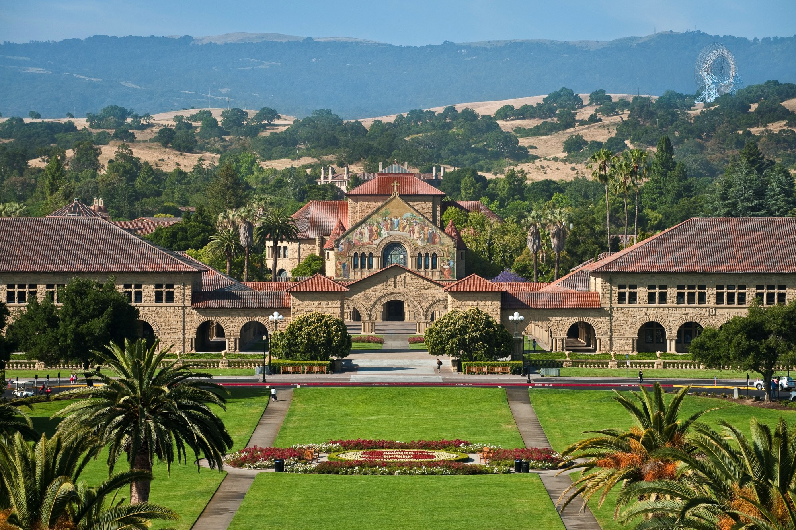

College

After high school I plan on attending a four-year university. What I am looking for in a college is a school that will give me a great education, provide
a wide range of opportunities for expanding my horizons, and is located somewhere reasonably close to some sort of relatives. A university that is strong in
my area of study is the most important factor for me, but I don't want to be confined to my major; I think having a wide range of skills and understanding is
extremely valuable. I would like to be near family (~1-3 hours by car), just so that if something happens I know I will have people who care about me nearby.
For a major I am considering statistics, applied mathematics, mathematical and computational sciences, majors that will set me up for a career in data
science.
Career
 My plan is to pursue a career in data science, a field I find incredibly intruiging because there are countless different areas that can benefit from data
analytics. Having data science skills will allow me to explore a variety of different industries, and will not tie me down to one job. In addition to the
range of options data science will give me, I also really enjoy the mathematics and coding that are involved with data science. Math has always been my favorite
subject in school, and I will code for fun, not just for work or school. I want a job that will allow me to live comfortably, but money is in no way my priority in
choosing a career.
My plan is to pursue a career in data science, a field I find incredibly intruiging because there are countless different areas that can benefit from data
analytics. Having data science skills will allow me to explore a variety of different industries, and will not tie me down to one job. In addition to the
range of options data science will give me, I also really enjoy the mathematics and coding that are involved with data science. Math has always been my favorite
subject in school, and I will code for fun, not just for work or school. I want a job that will allow me to live comfortably, but money is in no way my priority in
choosing a career.
Beyond
While work is the biggest part of everyone's lives, it is very important to find time for hobbies, traveling, and such. I do not spend very much time thinking about
what I want my life to look like in the future, but I do know I want to have the time and resources to do whatever I want, whether that be starting a family or starting
a company; whatever my heart desires.